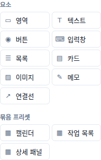
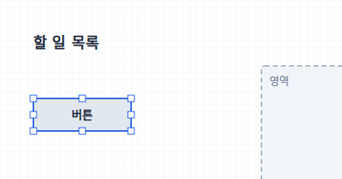
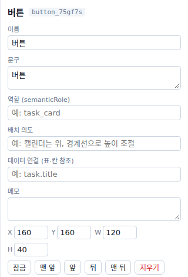
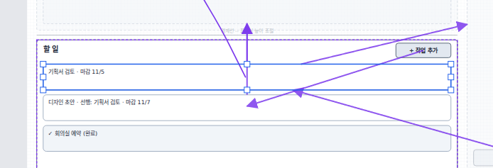
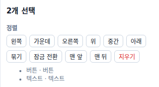
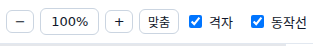
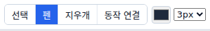
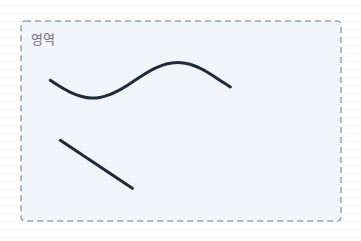

상자·글·버튼을 놓고 다듬고, 펜으로 손글씨를 더합니다
한눈에 보기
따라 하기 · 1 / 10

따라 하기 · 2 / 10
따라 하기 · 3 / 10

| 하고 싶은 것 | 방법 |
|---|---|
| 옮기기 | 요소를 끌기 · 방향키 1px · Shift+방향키 10px |
| 크기 | 테두리의 작은 네모를 끌기 |
| 지우기 | Delete 또는 오른쪽 지우기 |
| 복사 | Ctrl+C/V · 바로 복제 Ctrl+D |
따라 하기 · 4 / 10

따라 하기 · 5 / 10

따라 하기 · 6 / 10

따라 하기 · 7 / 10
| 버튼 | 하는 일 |
|---|---|
| 잠금 | 실수로 움직이지 않게 고정 (다시 누르면 잠금 풀기) |
| 맨 앞 앞 | 다른 요소 위로 |
| 뒤 맨 뒤 | 다른 요소 아래로 (배경 틀) |
| 지우기 | 고른 요소 지우기 |
따라 하기 · 8 / 10

| 하고 싶은 것 | 방법 |
|---|---|
| 확대·축소 | Ctrl+마우스 휠 · − + · 가운데 %를 누르면 100% |
| 화면 전체 보기 | 맞춤 또는 Shift+1 |
| 작업판 옮겨 보기 | 스페이스를 누른 채 끌기 · 마우스 휠 |
| 칸 맞춤 끄기·켜기 | 격자 체크 (8px 칸) |
따라 하기 · 9 / 10

단축키 P · 굵기 1~8px · 태블릿 펜은 누르는 힘(필압)도 기록

따라 하기 · 10 / 10
알아 두면 좋은 점
알아 두면 좋은 점
| 키 | 하는 일 | 키 | 하는 일 |
|---|---|---|---|
| V P E L | 선택 · 펜 · 지우개 · 동작 연결 | Ctrl+Z | 실행 취소 (+Shift 다시 실행) |
| Delete | 고른 것 지우기 | Ctrl+C V D | 복사 · 붙여넣기 · 복제 |
| 방향키 | 1px 옮기기 (Shift 10px) | Ctrl+G | 묶기 (+Shift 풀기) |
| Esc | 고르기 취소 · 묶음 밖으로 | Ctrl+휠 | 확대·축소 |
| Shift+1 | 화면 맞춤 | 스페이스+끌기 | 작업판 옮겨 보기 |